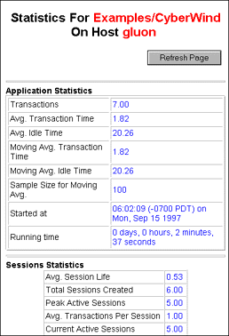

Deployment and Performance Issues
PATH
WebObjects 4.0 Documentation >
WebObjects Developer's Guide
 Table of Contents
Table of Contents  Previous Section
Previous Section
Accessing Statistics
If your application has a WOStats page, you can look at the statistics that WOStatisticsStore gathers. WOStats is a reusable component stored in the WOExtensions framework (which WebObjects applications link to by default). While your application is running, you can access the WOStats page with a URL like the following:
http://localhost/cgi-bin/WebObjects/MyApp.woa/wa/WOStats
Note: You can access any component directly using a URL with this form.
Figure 37 shows a WOStats page.

Figure 37. WOStats Page
The source for the WOStats page is provided, along with the source for all of the components in the WOExtensions framework, in /System/Developer/Examples/WebObjects/Source/WOExtensions (NeXT_ROOT\Developer\Examples\WebObjects\Source\WOExtensions on Windows NT systems).
If you want access to statistics programmatically, send the WOStatisticsStore a statistics message. For example:
// WebScript
NSDictionary *myDict = [[[self application]
statisticsStore]
statistics];
// Java
NSDictionary myDict =
this.application().statisticsStore().statistics;
For a list of keys to this dictionary, see the WOStatisticsStore class specification in the WebObjects Class Reference.
Note that this dictionary is created on demand. It is costly to call this method repeatedly.
Table of Contents  Next Section
Next Section